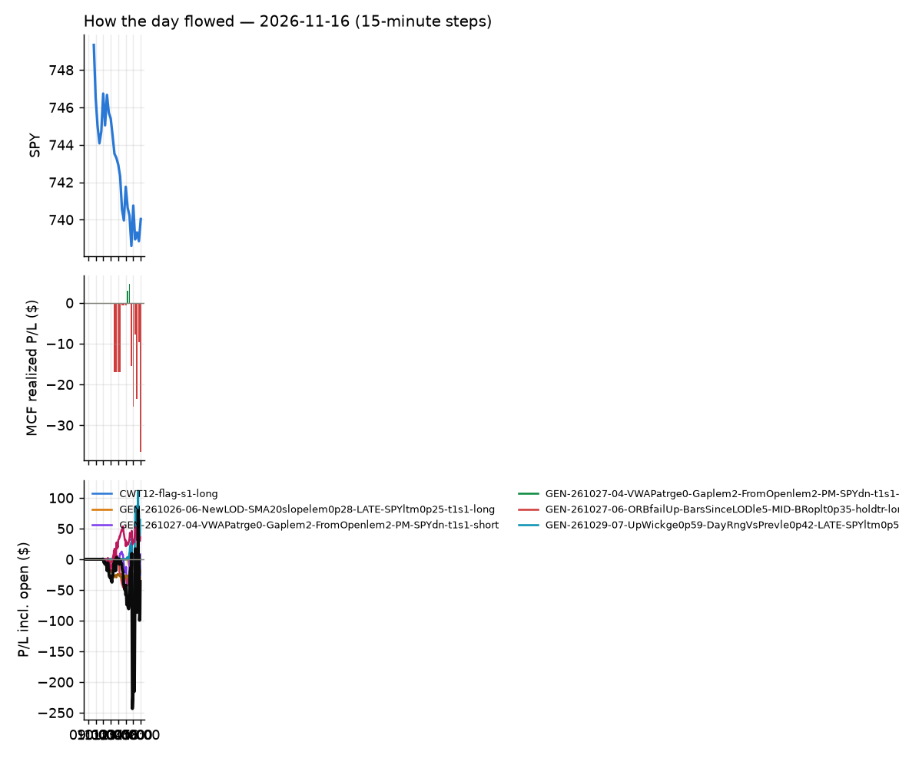
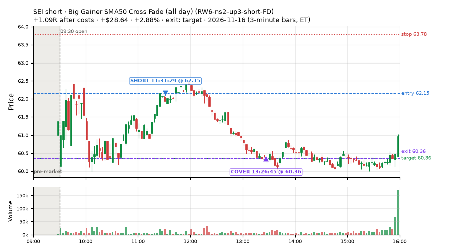
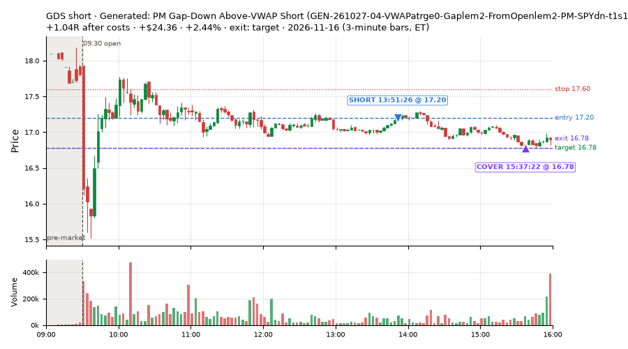
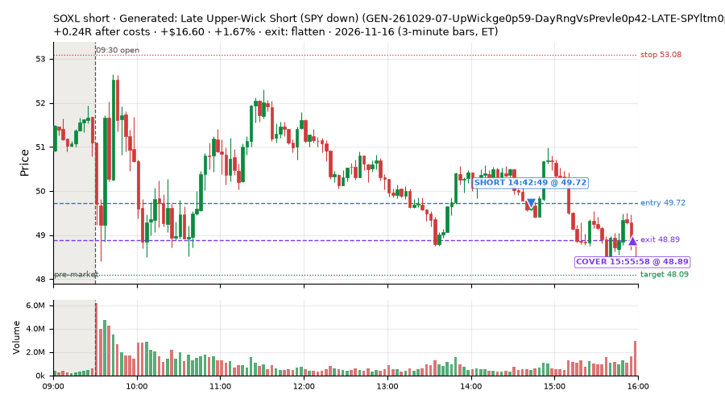
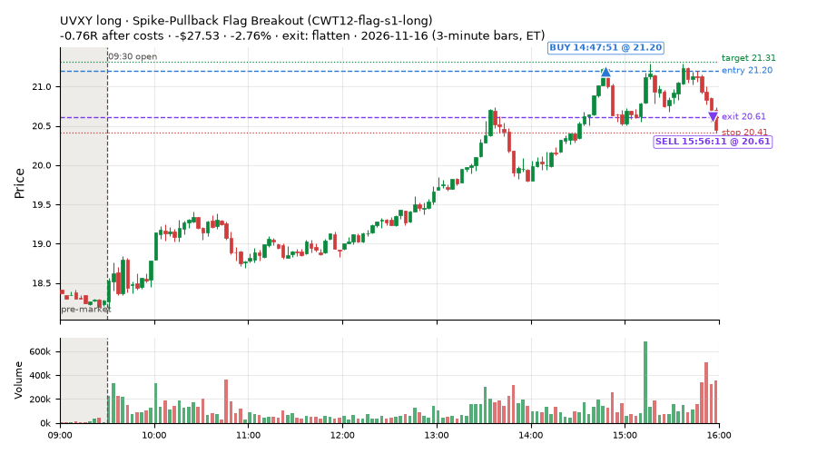
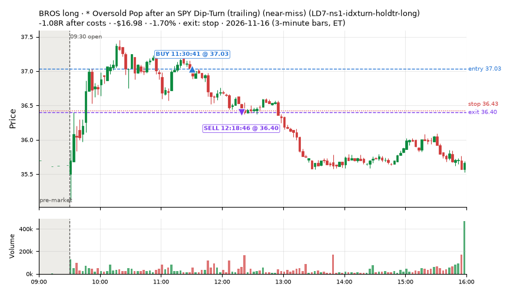
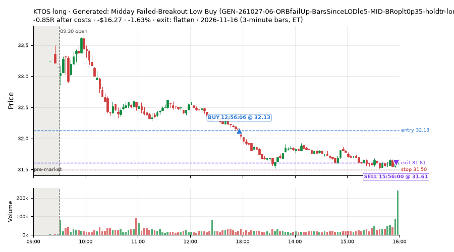
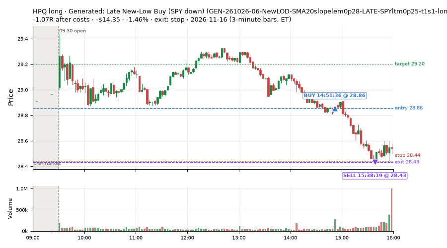
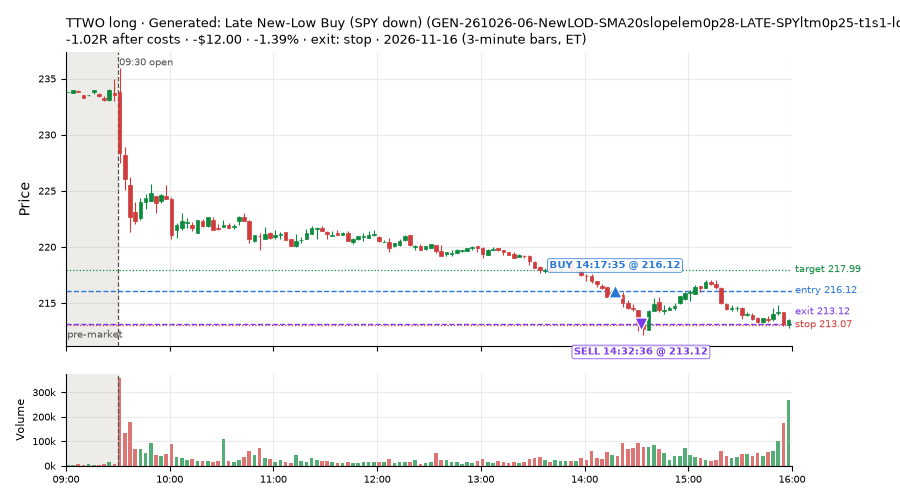

64 trades · win rate 47% · P/L $-36.50
PROBATION: no live setup has passed both locked test periods. 10 owner-directed setups added 2026-10-08 (MarcoFlow top 5 + 5 new), untested live. RW6G1 (RW6 + VWAP band guard) added 2026-10-09, probation.

| Symbol | Setup | Side | In | Out | Entry | Exit | Exit reason | % gained | P/L |
|---|---|---|---|---|---|---|---|---|---|
| SEI | Big Gainer SMA50 Cross Fade (all day) (RW6-ns2-up3-short-FD) | short | 11:31 | 13:26 | 62.15 | 60.36 | target | +2.88% | $28.64 |
| GDS | Generated: PM Gap-Down Above-VWAP Short (GEN-261027-04-VWAPatrge0-Gaplem2-FromOpenlem2-PM-SPYdn-t1s1-short) | short | 13:51 | 15:37 | 17.20 | 16.78 | target | +2.44% | $24.36 |
| SOXL | Generated: Late Upper-Wick Short (SPY down) (GEN-261029-07-UpWickge0p59-DayRngVsPrevle0p42-LATE-SPYltm0p5-t05s1-short) | short | 14:42 | 15:55 | 49.72 | 48.89 | flatten | +1.67% | $16.60 |
| Symbol | Setup | Side | In | Out | Entry | Exit | Exit reason | % lost | P/L |
|---|---|---|---|---|---|---|---|---|---|
| UVXY | CWT12-flag-s1-long | long | 14:47 | 15:56 | 21.20 | 20.61 | flatten | -2.76% | $-27.53 |
| BROS | LD7-ns1-idxturn-holdtr-long | long | 11:30 | 12:18 | 37.03 | 36.40 | stop | -1.70% | $-16.98 |
| KTOS | GEN-261027-06-ORBfailUp-BarsSinceLODle5-MID-BRoplt0p35-holdtr-long | long | 12:56 | 15:56 | 32.13 | 31.61 | flatten | -1.63% | $-16.27 |
| HPQ | GEN-261026-06-NewLOD-SMA20slopelem0p28-LATE-SPYltm0p25-t1s1-long | long | 14:51 | 15:38 | 28.86 | 28.43 | stop | -1.46% | $-14.35 |
| TTWO | GEN-261026-06-NewLOD-SMA20slopelem0p28-LATE-SPYltm0p25-t1s1-long | long | 14:17 | 14:32 | 216.12 | 213.12 | stop | -1.39% | $-12.00 |








Signal to fill: median 2s, 90th percentile 3s (64 trades). Bars close each minute; the order follows the bar close.
Best excursion (MFE): median 0.27R; worst (MAE) median 0.39R. 47% of trades never got +0.25R in our favour; 1 reached +1R and still closed at or below 0.
| Symbol | Setup | Best R | Worst R | Closed R |
|---|---|---|---|---|
| MOH | RW6-ns2-up3-short-FD | +0.26 | -1.10 | -1.16 |
| NTR | GEN-261026-06-NewLOD-SMA20slopelem0p28-LATE-SPYltm0p25-t1s1-long | +1.08 | -0.38 | -0.23 |
| BUD | GEN-261027-06-ORBfailUp-BarsSinceLODle5-MID-BRoplt0p35-holdtr-long | +0.08 | -1.00 | -1.13 |
| HPQ | GEN-261026-06-NewLOD-SMA20slopelem0p28-LATE-SPYltm0p25-t1s1-long | +0.13 | -1.04 | -1.07 |
| VMC | GEN-261027-06-ORBfailUp-BarsSinceLODle5-MID-BRoplt0p35-holdtr-long | +0.04 | -1.01 | -1.13 |
| Entry time | Trades | Win | Avg R | P/L |
|---|---|---|---|---|
| 10:30-11:30 | 4 | 25% | -0.39 | $-4.64 |
| 11:30-13:00 | 12 | 42% | -0.37 | $-41.47 |
| 13:00-14:00 | 6 | 33% | +0.08 | $7.65 |
| 14:00-16:00 | 42 | 52% | -0.05 | $1.96 |
| Setup | Trades | Win | Avg R after costs | Adj R (net of SPY) | Avg R ex-market (all sessions) | P/L |
|---|---|---|---|---|---|---|
| Spike-Pullback Flag Breakout (CWT12-flag-s1-long) | 2.0 | 50% | -0.34 | -0.37 | +0.15 (beta -0.03, n 8) | $-25.13 |
| Generated: Late New-Low Buy (SPY down) (GEN-261026-06-NewLOD-SMA20slopelem0p28-LATE-SPYltm0p25-t1s1-long) | 11.0 | 27% | -0.26 | -0.18 | +0.01 (beta +2.75, n 11) | $-34.98 |
| Generated: PM Gap-Down Above-VWAP Short (GEN-261027-04-VWAPatrge0-Gaplem2-FromOpenlem2-PM-SPYdn-t1s1-short) | 10.0 | 50% | +0.03 | -0.07 | -0.25 (beta -1.01, n 10) | $7.99 |
| Generated: Midday Failed-Breakout Low Buy (GEN-261027-06-ORBfailUp-BarsSinceLODle5-MID-BRoplt0p35-holdtr-long) | 9.0 | 22% | -0.69 | +0.14 | -1.46 (beta -1.02, n 9) | $-63.45 |
| Generated: Late Upper-Wick Short (SPY down) (GEN-261029-07-UpWickge0p59-DayRngVsPrevle0p42-LATE-SPYltm0p5-t05s1-short) | 23.0 | 61% | +0.11 | +0.09 | +0.11 (beta -0.79, n 23) | $64.20 |
| * Oversold Pop after an SPY Dip-Turn (trailing) (near-miss) (LD7-ns1-idxturn-holdtr-long) | 3.0 | 33% | -0.42 | +0.05 | – | $-20.81 |
| Big Gainer SMA50 Cross Fade (all day) (RW6-ns2-up3-short-FD) | 6.0 | 67% | +0.09 | -0.16 | -0.25 (beta -0.62, n 7) | $35.67 |
Market direction (SPY, beta 1) accounted for $-32.97 of today's $-36.50; the rest ($-3.53) came from the setups themselves. Avg R net of SPY: -0.02 (incl. a hedge leg's cost; report only).
22 setups live today. Today: 97 signals, 64 taken, 0 lost because another setup held the symbol (0%). Since 2026-11-05 (8 sessions): 308 signals, 132 taken, 1 lost to other setups (0%). Peak open positions today 56 of 200 slots. Earnings blackout removed 409 symbols before scanning.
Simulated playing time (not live): 175 what-if trades of signals not taken, avg -0.05R, 54% winners; of them 1 lost to another setup (avg +0.50R).
Silent: IDX1-qqq100-0955-TQQQ-trail, LD6-spy-dip020atr-breadthturn-spxl-holdtr-long, IDX3-spy075-0955-3x-trail, LD5-st2-breadthup-t05s1-long, NM-RWN4-ns2-spyup05-notfri-short
| Prio | Setup | Today sig / taken | Sessions | Signals / taken / trades | Taken/day | Expected/day | Lost to other setups | Lost to (setup n) | Top skip reasons | SIMULATED: not-taken n / avg R / win | Verdict |
|---|---|---|---|---|---|---|---|---|---|---|---|
| 1 | Index Dip Bounce 1 TQQQ IDX1-qqq100-0955-TQQQ-trail | 0 / 0 | 8 | 0 / 0 / 0 | 0.00 | – | 0 | – | – | 0 / – | silent no signals in 8 session(s); no expected rate on file |
| 2 | * SPY Dip of 0.2 ATR, Breadth Turn (SPXL, trailing) (near-miss) LD6-spy-dip020atr-breadthturn-spxl-holdtr-long | 0 / 0 | 8 | 0 / 0 / 0 | 0.00 | – | 0 | – | – | 0 / – | silent no signals in 8 session(s); no expected rate on file |
| 3 | * Oversold Pop after an SPY Dip-Turn (trailing) (near-miss) LD7-ns1-idxturn-holdtr-long | 4 / 3 | 8 | 5 / 4 / 4 | 0.50 | – | 0 | – | price through stop/target 1 | 1 / -0.30R / 0% | slow 2.5 entries/week; ~24 weeks to 60 trades |
| 4 | Gap-Down Reclaim Fade, Afternoon (near-miss) NM-PM-gapdn-above-pdh-rvol-short | 0 / 0 | 8 | 1 / 0 / 0 | 0.00 | – | 0 | – | spread / quote / size 1 | 1 / +1.28R / 100% | slow no entries yet |
| 5 | Generated: Late Upper-Wick Short (SPY down) GEN-261029-07-UpWickge0p59-DayRngVsPrevle0p42-LATE-SPYltm0p5-t05s1-short | 23 / 23 | 1 | 23 / 23 / 23 | 23.00 | – | 0 | – | – | 0 / – | ok 115.0 entries/week |
| 6 | Generated: Late New-Low Buy (SPY down) GEN-261026-06-NewLOD-SMA20slopelem0p28-LATE-SPYltm0p25-t1s1-long | 14 / 11 | 1 | 14 / 11 / 11 | 11.00 | – | 0 | – | other 3 | 3 / +0.30R / 67% | ok 55.0 entries/week |
| 7 | Generated: PM VWAP Reclaim Buy (SPY up) GEN-261019-06-VWAPxUp-EMAdiffge0p29-PM-SPYgt0p5-holdtr-long | 0 / 0 | 1 | 0 / 0 / 0 | 0.00 | – | 0 | – | – | 0 / – | quiet - wait no signals in 1 session(s); too early to tell |
| 8 | Generated: PM Failed-Breakdown Buy GEN-261026-10-ORBfailDn-EMAdChglem0p051-PM-BRopgt0p65-t1s1-long | 0 / 0 | 1 | 0 / 0 / 0 | 0.00 | – | 0 | – | – | 0 / – | quiet - wait no signals in 1 session(s); too early to tell |
| 9 | Generated: Midday Failed-Breakout Low Buy GEN-261027-06-ORBfailUp-BarsSinceLODle5-MID-BRoplt0p35-holdtr-long | 23 / 9 | 1 | 23 / 9 / 9 | 9.00 | – | 0 | – | other 12, spread / quote / size 2 | 14 / +0.05R / 64% | ok 45.0 entries/week |
| 10 | Generated: Midday Volume Buy (volatile) GEN-261027-05-VolRatioge1p5-ORLdistge0p41-ATRdge6-MID-BRvwgt0p7-t05s1-long | 0 / 0 | 1 | 0 / 0 / 0 | 0.00 | – | 0 | – | – | 0 / – | quiet - wait no signals in 1 session(s); too early to tell |
| 11 | Prior-Day-High Break Fade (all day) ST5-pdbrkup-short-mid-t05s1-FD | 0 / 0 | 8 | 14 / 4 / 4 | 0.50 | 0.78 | 0 | – | not shortable / shorts off 8, spread / quote / size 2 | 10 / -0.51R / 40% | slow 2.5 entries/week; ~24 weeks to 60 trades |
| 12 | Backside VWAP-Test Short CWT04-backside-vwaptest-a15-short | 0 / 0 | 8 | 7 / 0 / 0 | 0.00 | – | 0 | – | not shortable / shorts off 5, spread / quote / size 1, other 1 | 7 / -0.28R / 29% | slow no entries yet |
| 13 | Generated: PM Gap-Down Above-VWAP Short GEN-261027-04-VWAPatrge0-Gaplem2-FromOpenlem2-PM-SPYdn-t1s1-short | 17 / 10 | 1 | 17 / 10 / 10 | 10.00 | – | 0 | – | not shortable / shorts off 4, other 2, spread / quote / size 1 | 7 / +0.30R / 86% | ok 50.0 entries/week |
| 14 | * Shallow Nasdaq Dip, Breadth Turn (TQQQ) (near-miss) LD2-qqq-dip015-breadthturn-tqqq-t05s1-long | 0 / 0 | 8 | 2 / 2 / 2 | 0.25 | – | 0 | – | – | 0 / – | slow 1.2 entries/week; ~48 weeks to 60 trades |
| 15 | Early NS3 Short While QQQ Up (near-miss) NM-RWR3-ns3-qqqup-early-short | 0 / 0 | 8 | 20 / 7 / 7 | 0.88 | – | 0 | – | spread / quote / size 7, not shortable / shorts off 5, other 1 | 13 / +0.31R / 69% | slow 4.4 entries/week; ~14 weeks to 60 trades |
| 16 | Generated: Open Oversold Below-VWAP Short GEN-261023-03-RSI5le13-VWAPatrlem0p34-OPEN-BRvwgt0p6-holdtr-short | 0 / 0 | 1 | 0 / 0 / 0 | 0.00 | – | 0 | – | – | 0 / – | quiet - wait no signals in 1 session(s); too early to tell |
| 17 | Gap-Up Faller Bounce Short (all day) ST3-rsi5up-short-pm-t1s1-FD | 0 / 0 | 8 | 22 / 13 / 13 | 1.62 | 1.35 | 0 | – | not shortable / shorts off 7, spread / quote / size 1, other 1 | 9 / -0.47R / 22% | slow 8.1 entries/week; ~7 weeks to 60 trades |
| 18 | Generated: Open First-Dip Short (extended) GEN-261022-04-RSI2le0-Eff6ge0p83-SMA20dge0p59-OPEN-BRvwlt0p5-t1s1-short | 4 / 0 | 1 | 4 / 0 / 0 | 0.00 | – | 0 | – | not shortable / shorts off 2, spread / quote / size 1, other 1 | 4 / -0.09R / 50% | slow no entries yet |
| 19 | Generated: Late-AM Gap-Up Failed-Break Short GEN-261027-09-ORBfailDn-Gapge2-Slope6ge0p03-LAM-BRvwlt0p5-t05s05-short | 2 / 0 | 1 | 2 / 0 / 0 | 0.00 | – | 0 | – | spread / quote / size 1, other 1 | 2 / -0.20R / 50% | slow no entries yet |
| 20 | Panic Flush Reversal (deep, 3x volume) CWT05-flush-m075-v3-long | 0 / 0 | 8 | 19 / 10 / 10 | 1.25 | – | 0 | – | other 6, spread / quote / size 1, price through stop/target 1 | 8 / -0.13R / 62% | slow 6.2 entries/week; ~10 weeks to 60 trades |
| 21 | Spike-Pullback Flag Breakout CWT12-flag-s1-long | 2 / 2 | 8 | 12 / 8 / 8 | 1.00 | – | 0 | – | other 3, broker rejected 1 | 4 / +0.20R / 75% | slow 5.0 entries/week; ~12 weeks to 60 trades |
| 22 | Big Gainer SMA50 Cross Fade (all day) RW6-ns2-up3-short-FD | 8 / 6 | 2 | 10 / 7 / 7 | 3.50 | 7.12 | 0 | – | not shortable / shorts off 1, spread / quote / size 1, other 1 | 3 / +0.47R / 100% | ok 17.5 entries/week |
Every trade is attached as a CSV you can open and edit in Excel or Google Sheets. Live page: https://misiti15.github.io/MCF/live/